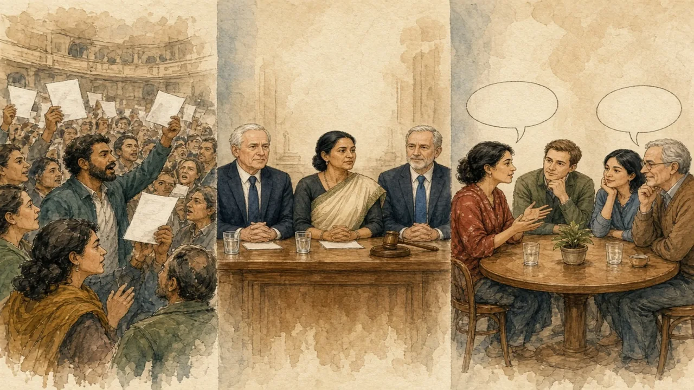

Shouting in one parliament, polite timing in another, quiet talks in a third. How a country debates says a lot about it.
Debate styles · Lesson 7 of 9
🌍 Politics map · ← Politics Around the World · 🌱 Easier version (A2) · ← Are the Nordics Socialist? · Who Tells Us the News? →

Each new word is hidden in a sentence. Read it aloud and say what you think the bold word means from the rest of the sentence — then reveal it and see how close you were.
Read each part. After it, there's a quick comprehension check (try the questions from memory first), then one thing to discuss.
In the UK House of Commons, the main weekly event is Prime Minister's Questions, held on Wednesdays for half an hour. The government and opposition sit on opposite sides, facing each other, and members cheer, jeer and shout while the Speaker calls for order. Rules limit what can be said: members may not accuse each other of lying or use “unparliamentary language”, so they use formal phrases such as “my right honourable friend” and “the honourable member”. Canada has a similar Question Period. This adversarial style is designed on purpose: the opposition's role is to challenge ministers in public, and the government has to defend its record live. Other parliaments use different layouts: in the Swedish Riksdag, members sit in a half-circle by region, not by party, and debates are usually calmer.
1. Why is the UK Commons called adversarial?
2. How does the Swedish Riksdag seat its members?
1. Because government and opposition face each other and the opposition's role is to challenge ministers in public.
2. In a half-circle, by region and not by party.
Televised debates between US presidential candidates are more formal. They began with the Kennedy–Nixon debates of 1960, and according to a widely repeated account, television viewers thought Kennedy had won while radio listeners favoured Nixon, which shows how much appearance can matter. Today each candidate gets a set time, a moderator asks the questions, and rules, sometimes including muted microphones, limit interruptions. Even so, the format rewards short, memorable answers, which makes it hard to explain complicated policies. Viewers often judge by body language and calmness, not by the quality of the argument, and a single phrase can dominate the news for days. In the US Senate, a different tradition, the filibuster, allows a minority to delay a vote by speaking at length, unless 60 senators vote to end the debate.
1. What did the 1960 debates show?
2. What does a filibuster do?
1. That appearance on television can matter as much as arguments.
2. It lets a minority delay a vote by prolonged speaking, unless 60 senators end the debate.
In many parliaments, much of the real work happens out of sight. Committees examine proposed laws line by line, hear experts and call officials to explain their decisions. In the German Bundestag, committees are powerful and proceed by negotiation, and in coalition systems such as Germany and the Netherlands, parties usually settle their disagreements in private before a debate is held. Supporters say that this encourages compromise and detailed work, and that a plenary debate is mostly a stage for explaining positions to voters. Critics say it can leave voters unsure where decisions were made. A calm chamber can therefore hide a lot of argument somewhere else, and a noisy one can hide a lot of agreement.
1. Where does much parliamentary work happen?
2. What is the criticism of private negotiation?
1. In committees, out of public view.
2. That voters cannot tell where decisions were made.
A stereotype and the reality rarely match. This lesson's grammar gives you the structure to describe the difference.
Complete each sentence about How Do Politicians Argue?.
1. Parliamentary debate to be more adversarial than committee work. (tends / tend / tending)
2. That be true, but I would like to see the evidence. (might / will / must)
3. To extent, interrupting shows energy; to another, it shows disrespect. (some / any / much)
1. tends
2. might
3. some
1. Politicians in some countries to speak in short, formal turns. (tend / tends / tending)
2. It be argued that formal rules make debates fairer. (can / does / is)
3. I take your point; , I am not convinced. (nevertheless / because / unless)
1. tend
2. can
3. nevertheless
Hold on to this — you'll need it in the Speak tab.
Styles of debate reflect what each system expects from politicians. Where one party governs alone, public confrontation helps voters see the difference between government and opposition. Where coalitions are normal, partners cannot afford to insult people they will need next month, so the style is more careful and the real bargaining takes place in private. Neither is simply more honest: the first can turn serious disagreement into theatre, while the second can turn real conflict into quiet deals. Hedged, polite language is a tool in both cases, because it lets people disagree without ending the relationship.
This is the heart of the lesson — do all of it out loud. The timer is there to keep you going: fill the time with detail rather than escaping it.
Describe three ways politicians debate in different countries, as if to a friend who thinks it is always loud. Move through the arc: noise in the chamber → debate by the clock → quiet work in committees → what each style rewards.
Use today's grammar at least three times, and work in at least five key words (debate, interrupt, heckle, moderator, rebuttal, adversarial, scrutinise, floor).
“Politicians should not be allowed to interrupt each other.” Discuss, using hedging and polite disagreement.
Tell a story from your own world — work, family, the news — that connects to this topic. Stuck for an idea? Pick one of these and run with it:
🌍 Politics map · ← Politics Around the World · 🌱 Easier version (A2) · ← Are the Nordics Socialist? · Who Tells Us the News? →